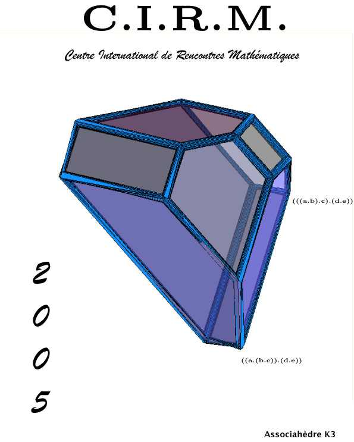

Infinite Dimensional Geometry, Non Commutative Geometry, Operator Algebras and Fundamental Interactions
First Carribean Spring School of Mathematics and Theoretical Physics. Saint-François, Guadeloupe (31 mai - 13 juin 1993)
Quantum symmetries in theoretical physics and mathematics
Simetrías cuánticas en física teórica y en matemática
Symétries quantiques en physique théorique et en mathématiques
BARILOCHE 2000: A CIMPA-UNSA-UNESCO-ARGENTINA SCHOOL
S.C. de Bariloche, Patagonia, Argentina (10 - 22 janvier 2000)
Available lectures (
download ) :
N. Andruskiewitsch, M. Dubois-Violette, D. Evans, A. Ocneanu, O. Ogievetsky, J.B. Zuber.
Available poster
: Classification of SL(2,C) and SL(3,C) quantum subgroups by
A. Ocneanu, poste
r presented at the Bariloche school (January 2000),
in relation with the classification of SU(3) lattice integrable models (P. Di Francesco - J.B. Zuber ).
Lecturers (photos) N. Andruskiewitsch, M. Dubois-Violette, D. Evans, A. Ocneanu, O. Ogievetsky, N. Reshetikhin, M. Rosso, A. Varchenko, S.L. Woronowicz, J.B. Zuber.
Geometry and Integrability in Mathematical Physics : GIMP'08
Marseille, 15-19 septembre 2008
Poster
Informatique
The last link is a memo explaining how to send an X11 window from a (very old) Ivory Lisp Machine running Genera to a (not so new) Apple G5 running OSX
Photos
Liens
Marseille : hotels, restaurants, histoire, choses à faire (extrait du Guide du Routard, accès restreint à certaines machines du CPT...)
En physique, on sait associer des théories de champs particulières (théories conformes de type WZW) aux catégories de fusion définies par la donnée d'un graphe de Dynkin G et d'un entier k non négatif (le niveau). Une autre possibilité est de définir la catégorie de fusion par la donnée du double quantique d'un groupe fini H, ou plus généralement par une paire (H,w ) où w est un 3-cocycle sur H à valeurs dans U1. Plus généralement on peut considérer des "orbifolds" définis par la donnée d'un groupe de Lie, d'un niveau, et d'un sous-groupe. Les modules-catégories relatives aux différents choix possibles de "sous-groupes quantiques" ou de "modules quantiques", ainsi que les graphes de fusion correspondants, possèdent quant à eux une interprétation physique dans le cadre des théories conformes à bord. En particulier, on sait, pour chacun d'eux, définir et calculer un invariant modulaire qui s'interprète, en physique, comme fonction de partition.
A la donnée d'un diagramme de Dynkin G et d'un entier positif k (niveau), on associe une catégorie de fusion qui peut être décrite soit en termes de représentations intégrables d'algèbres de Lie affines, soit en termes de certaines représentations de groupes quantiques aux racines de l'unité. La fusion par les représentationx fondamentales intégrables peut être décrite par des graphes appelés "graphes de fusion". D'une certaine façon, ces catégories de fusion généralisent, au niveau quantique, la théorie des représentations des groupes et algèbres de Lie, le processus de fusion généralisant la notion usuelle de produit tensoriel de représentations. Les pages web proposées (ici) montrent les graphes de fusion de type (G,k) et décrivent quelques unes de leurs propriétés, pour tous les types de graphes de Dynkin (de rang petit), et pour quelques valeurs du niveau.
D'une certaine façon, les catégories monoidales précédentes généralisent, au niveau quantique, la théorie des représentations des groupes et algèbres de Lie. Or, classiquement, tout sous-groupe fini d'un groupe de Lie possède sa propre théorie de représentations, et l'ensemble obtenu en considérant des sommes d'irréductibles constitue un module sur l'anneau associé aux représentations du groupe de Lie considéré. Le même phénomène existe dans le cadre quantique : pour chacune des catégories de fusion de type (G,k) on peut considérer des "modules-catégories" (ne pas confondre avec la notion de catégorie monoidale) sur laquelle la précédente (qui est monoidale) agit. L'action de (G,k) sur le module particulier choisi peut, lui aussi, être décrit par un graphe. Voir plus haut les cours délivrés dans le cadre de l'école Bariloche 2000 et en particulier celui de A. Ocneanu sur la classification des modules et sous-groupes quantiques pour G = SU(2), SU(3) et SU(4). Les pages web proposées (ici) reprennent cette classification et fournissent d'autres exemples (sans prétentation de classification) pour d'autres choix de G.
Cette base contient des données modulaires pour des doubles de Drinfeld de groupes finis, également désignés sous le nom de doubles quantiques (non tordus) de groupes finis. En particulier, des tables contiennent des données modulaires pour tous les groupes finis exceptionnels de SU2, SU3 ainsi que pour quelques sous-groupes membres de séries infinies.
| Centre de Physique Théorique |
Centre International de Rencontres Mathématiques |
| |
 |
| Clef de l'univers accrochée à la lune |
|
|
About the artist
|
|
{kind=link}
{kind=link}
{kind=link}